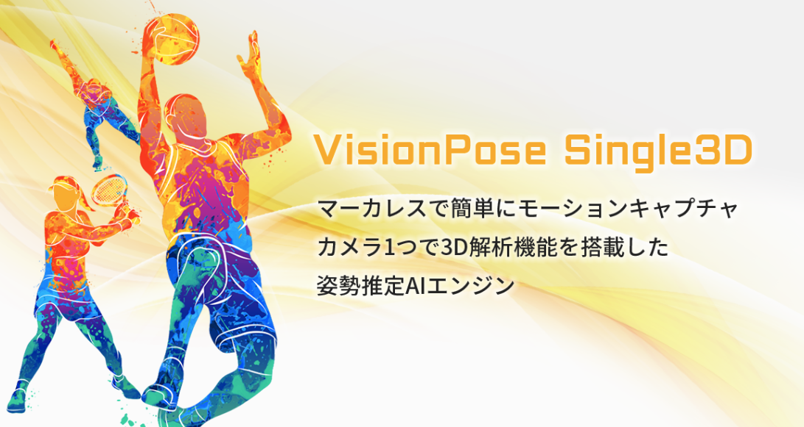
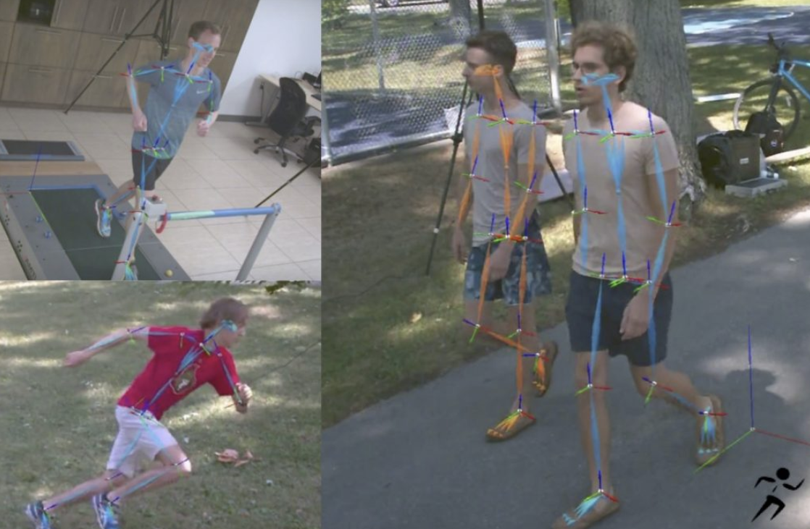

アーカイブティップス株式会社 マーカーレスモーションキャプチャー THEIA｜THEIA｜アーカイブティップス株式会社
株式会社ネクストシステム マーカレスの簡単モーションキャプチャ「VisionPose
Single3D」
アキュイティー株式会社,2024 リアルタイム・マーカーレス
モーションキャプチャCaptury 販売開始 ～マーカーレスでリアルタイムに身体の動きを「視える」状態へ～｜お知らせ｜ニュース・リリース｜Acuity
Inc.｜アキュイティー 画像処理・機械学習による計測・検査DX
ペリテックS ロボット・モーションキャプチャティーチング
I
マーカーレス
従来のモーションキャプチャーは光学式や慣性式のように人体や物体にマーカーを装着し、動きを反映していた。しかし、マーカーレスはセンサーやカメラを用いてマーカーなしで動きを反映することができる。マーカーレスは身体に装置を付ける必要がないため、動きの制限をなくすことや身体にかかる負担を大幅に減少することができる。これらの利点は特にスポーツ分野に活かされる。 画像式のモーションキャプチャはマーカーレスであるが、マーカーを使用している光学式や慣性式よりも精度が落ちてしまったり、画像式であっても精度を高めるためにはマーカーを用いる必要がある。そのため、今後はさらに高精度でリアルタイムな動作捕捉が可能になることが期待されている。これにより、より手軽で低コストなモーションキャプチャが普及し、さまざまな分野での活用が進むと予想できる。

ロボティクス・AI分野
モーションキャプチャーはロボットの遠隔操作でも用いられている。モーションキャプチャーを用いて、リアルタイムで人間の動作をロボットに反映させることで操作する。これは、医療分野や危険な環境などでの作業に活用されている。医療分野では、手術時に医者が現場にいなくても、遠隔でロボットを動かし手術をすることができる。災害現場などの危険な環境では、人間が直接立ち入ることが難しい場所でも、代わりにロボットが立ち入ることで安全に作業が可能である。 また、モーションキャプチャー技術を用いて、人間の動作や表情をロボットやAIに学習させることで、より自然な動作やコミュニケーションが可能になる。これは、介護や福祉分野でのロボットの活用が進むことが期待されている。
